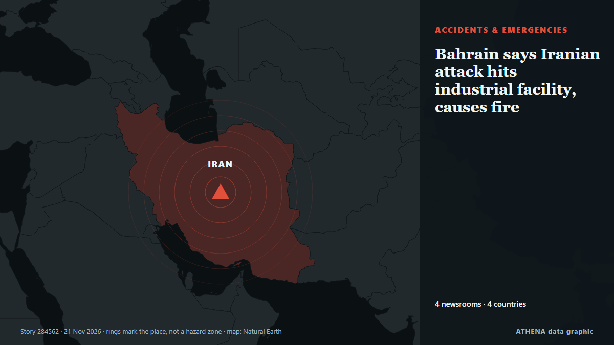

Accidents & emergencies
SponsoredPresented by  Cybernetics and Artificial Intelligence Lab Welcome to the Cybernetics and Artificial Intelligence Laboratory, established at the Department of Business Administration of the National and Kapodistrian University of Athens. The lab is headed by Professor Dimitrios Thomakos. The lab aims to do research that can be published in top venues. Our research uses tools and methods of Artificial Intelligence, and lies in the following areas: - Forecasting - Decision making - Cyber security - Finance We are always looking forward to collaborating with exceptional students!
Cybernetics and Artificial Intelligence Lab Welcome to the Cybernetics and Artificial Intelligence Laboratory, established at the Department of Business Administration of the National and Kapodistrian University of Athens. The lab is headed by Professor Dimitrios Thomakos. The lab aims to do research that can be published in top venues. Our research uses tools and methods of Artificial Intelligence, and lies in the following areas: - Forecasting - Decision making - Cyber security - Finance We are always looking forward to collaborating with exceptional students!

Accidents & emergenciesBahrain says Iranian attack hits industrial facility, causes fire
Nov 21 - Bahrain said on Saturday that an Iranian attack had struck and damaged a civilian industrial facility, causing a fire but no injuries, the latest incident as hostilities spread across the… from The Straits Times
Man convicted of starting deadly 2025 Palisades blaze in Los Angeles
The Palisades fire killed 12 people as it incinerated entire neighbourhoods in Los Angeles and Malibu. from The Irish News (Belfast)
Bezzecchi wins Portuguese MotoGP sprint, Marc Marquez crashes
Raul Fernandez and Alex Marquez finished second and third respectively behind Aprilia's Marco Bezzecchi, who claimed his first sprint victory of the season. from Free Malaysia Today
Three Salvadoran Soldiers Die in Haiti Explosives Accident
Three Salvadoran soldiers died after an accidental explosion at a camp in Haiti, the first deaths of Bukele's deployment. from The Tico Times
Fire at power station in Iraq's Basra kills at least 4, injures 35
Iraq’s Electricity Ministry said the incident involved a gas pipeline supplying the power station. from The Straits Times
England will need fire and pride to beat New Zealand – Steve Borthwick
The All Blacks, who are reeling from their shock defeat to Wales, will provide a valuable gauge of England’s progress. from The Irish News (Belfast)
APC campaign finance director dies in road crash
The News Agency of Nigeria reports that Festus Onuh, the chairman of Ferotex Construction Company Ltd, died in an accident on Thursday while travelling along Port Harcourt-Enugu Expressway to attend… from Premium Times
Six policemen injured as bus rams police van
The deceased were identified as Ramanand Yadav, 45, and Krishanveer Singh, 50, both residents of Champapurwa village in Gangaghat, Unnao. from Hindustan Times
‘Joy Bangla’ now a slogan for fleeing: Humaiun Kobir
Confirming the incident, Afzal Hossain, additional deputy commissioner (media) of Sylhet Metropolitan Police (SMP), said an attempt was made to set fire to the front gate at some point in the early… from The Business Standard (Bangladesh) (working feed)
At least 1,144 children killed or injured in Ukraine during Russia's war this year, UNICEF says
In October alone, child casualties rose by 150% compared with the same month last year, reaching at least 146, UNICEF said. from Kyiv Independent
Malaysia's Commonwealth Games gold medallist weightlifter loses arm in motorbike crash
Local media reports said that doctors had amputated Mohd Hafizuddin Roslin's arm above the elbow. from CNA (Channel NewsAsia)
F5 Warns 6 Critical BIG-IP Flaws Can Crash Traffic in Specific Setups, May Allow RCE
Six critical vulnerabilities in F5 BIG-IP allow an attacker to crash the Traffic Management Microkernel (TMM) without logging in, disrupting traffic until the TMM restarts. from The Hacker News
Six bodies recovered from rubble after explosion in residential building in Tbilisi - VIDEO - UPDATED - 5
Three among those trapped under rubble are children. from OC Media
Fire in an apartment building near France kills 1, injures 30
One person was killed and about 30 others were injured in a fire at an apartment building east of Paris, according to local officials. from BNO News
Chinese director, Thai nominees jailed in SAO building collapse case
A Bangkok court sentenced China Railway No. from The Thaiger
Fire tears through paper mill overnight in Vietnam's Can Tho
A fire broke out at Lee & Man Vietnam's paper mill in Can Tho City, southern Vietnam on Thursday night, engulfing about 20,000 square meters of its raw material storage area and remaining… from Tuoi Tre News
Bayesian crew unaware of safety risk before deadly sinking, British report finds
Billionaire entrepreneur Mr Lynch, 59, and his daughter Hannah, 18, were among seven people who died. from The Irish News (Belfast)